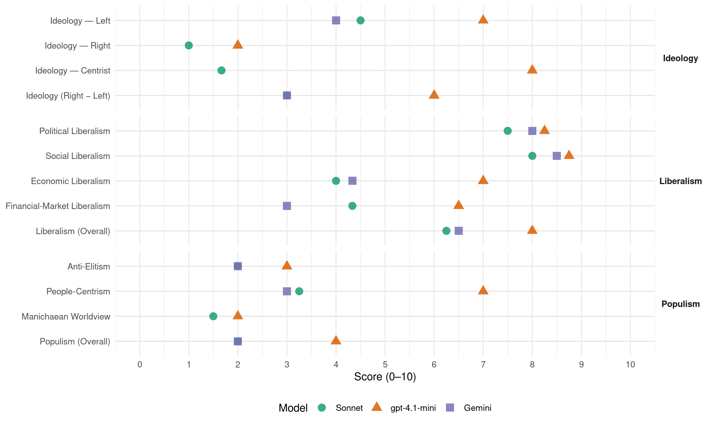

DnA (Norway, 2001)
manifesto_id 12320_200109
Get full text: This site shows derived annotations and short verbatim quotes only. The full manifesto text is © Manifesto Project / WZB — obtain it via manifesto-project.wzb.eu using the manifesto_id above.
Headline scores
| Dimension | Sonnet | gpt-4.1-mini | Gemini |
|---|---|---|---|
| Populism (Overall) | 2.0 | 4.0 | 2.0 |
| Anti-Elitism | 2.0 | 3.0 | 2.0 |
| People-Centrism | 3.2 | 7.0 | 3.0 |
| Manichaean Worldview | 1.5 | 2.0 | – |
| Ideology (Right − Left) | 3.0 | 6.0 | 3.0 |
| Liberalism (Overall) | 6.2 | 8.0 | 6.5 |
| Political Liberalism | 7.5 | 8.2 | 8.0 |
| Social Liberalism | 8.0 | 8.8 | 8.5 |
| Economic Liberalism | 4.0 | 7.0 | 4.3 |
| Financial-Market Liberalism | 4.3 | 6.5 | 3.0 |
Evidence per dimension
Economic Liberalism
Gemini · score 4.0 · verified · chunk 1
“Eierskap basert på partnerskap mellom staten”
Økt satsing på forskning og høyere utdanning Eierskap basert på partnerskap mellom staten og private Et næringsvennlig Norge
Gemini · score 3.0 · verified · chunk 2
“Markedet alene er ute av stand”
mindre leiligheter og boliger til en rimelig pris er mangelvare. Markedet alene er ute av stand til å sikre alle gode boliger og boforhold. Derfor
Gemini · score 6.0 · verified · chunk 3
“åpnet for konkurranse i kraftmarkedet”
fremste rekke på dette området. Det er åpnet for konkurranse i kraftmarkedet, og det har foregått en omfattende omstrukturering
Gemini · score 5.0 · mixed · chunk 4
“Konkurransen i markedet skal styrkes”
muligheten til bredbåndskommunikasjon blir reell for hele landet. Konkurransen i markedet skal styrkes, og den offentlige etterspørselen stimuleres.
gpt-4.1-mini · score 7.0 · verified · chunk 1
“næringsutvikling og verdiskaping. Arbeidet bærer velferden”
Det må vi gjøre i fellesskap, gjennom evne til å fornye og forandre, men ikke minst ved å styrke grunnlaget for næringsutvikling og verdiskaping. Arbeidet bærer velferden.
gpt-4.1-mini · score 7.0 · verified · chunk 2
“skattepolitikken skal bidra til dette. Arbeidsmarkedet må organiseres slik at det ikke støter stadig flere”
Nasjonalt vil Arbeiderpartiet snu utviklingen slik at det blir mindre forskjeller mellom de som har minst og de som har mest. Skattepolitikken skal bidra til dette. Arbeidsmarkedet må organiseres slik at det ikke støter stadig flere og yngre mennesker ut i en trygdetilværelse, og støtteordningene må innrettes slik at de oppmuntrer til aktivitet og deltakelse – ikke det motsatte.
gpt-4.1-mini · score 7.0 · verified · chunk 3
“Arbeiderpartiet vil bruke mulighetene som blant annet ny teknologi gir, til å etablere statlig virksomhet i distriktene”
Arbeiderpartiet vil holde fast på at by og land har ulike funksjoner i den nasjonale arbeidsdelingen og er gjensidig avhengig av hverandre. Arbeiderpartiet vil bruke mulighetene som blant annet ny teknologi gir, til å etablere statlig virksomhet i distriktene. Arbeiderpartiet mener at den økonomiske integrasjonen og den teknologiske utviklingen har skapt helt nye utfordringer for utviklingen i hele landet.
gpt-4.1-mini · score 7.0 · verified · chunk 4
“Forutsigbare rettslige og økonomiske rammebetingelser som sikrer norske bedrifters konkurranseevne”
Norge må bringes i forkant av utviklingen av elektronisk handel og forretningsdrift. Forutsigbare rettslige og økonomiske rammebetingelser som sikrer norske bedrifters konkurranseevne nasjonalt og internasjonalt, må utformes. Reglene for elektronisk handel må være forutsigbare og skape tillit både hos forbrukerne og næringslivet.
Sonnet · score 4.0 · verified · chunk 1
“Arbeiderpartiet er imot privatisering”
Arbeiderpartiet er imot privatisering fordi det innebærer at det offentlige fraskriver seg ansvaret for at alle får et likt tilbud.
Sonnet · score 5.0 · mixed · chunk 2
“Markedet alene er ute av stand til å sikre alle”
Markedet alene er ute av stand til å sikre alle gode boliger og boforhold. Derfor må kommunesektoren fortsatt være et viktig redskap
Sonnet · score 6.0 · mixed · chunk 3
“konkurransen i markedet skal styrkes”
Konkurransen i markedet skal styrkes, og den offentlige etterspørselen stimuleres.
Sonnet · score 5.0 · mixed · chunk 4
“Konkurransen i markedet skal styrkes”
Konkurransen i markedet skal styrkes, og den offentlige etterspørselen stimuleres. Arbeiderpartiets mål er at alle grunn- og videregående skoler…
Financial-Market Liberalism
Gemini · score 2.0 · verified · chunk 1
“Frie kapitalbevegelser og uro i valutamarkedene”
Frie kapitalbevegelser og uro i valutamarkedene forsterker økonomisk ustabilitet ett sted, og kan deretter spre den over hele verden.
Gemini · score 4.0 · verified · chunk 2
“Deler av oljefondet skal investeres”
forvaltningen av oljefondet må være i samsvar med målene i norsk utenrikspolitikk. Deler av oljefondet skal investeres etter miljøkriterier. Det internasjonale regelverket om patentrettigheter
gpt-4.1-mini · score 6.0 · verified · chunk 1
“finansielle og utviklingspolitiske organisasjoner arbeider i for stor grad atskilt”
Arbeiderpartiet vil arbeide for at FN-sekretariatet, FNs særorganisasjoner og de internasjonale finansinstitusjonene samordner sitt arbeid bedre, og at sammenhengen mellom det økonomiske og det handelspolitiske feltet videreutvikles og styrkes.
gpt-4.1-mini · score 7.0 · verified · chunk 4
“Sikkerhet og tillit i kommunikasjonsnettene er i denne sammenhengen viktig”
Det er derfor viktig at Norge har en teleinfrastruktur i verdensklasse som kan danne grunnlaget for lønnsom forretningsdrift og utvikling av nye produkter og tjenester. Sikkerhet og tillit i kommunikasjonsnettene er i denne sammenhengen viktig, og Arbeiderpartiet vil prioritere arbeidet med å tilrettelegge en infrastruktur for sikker elektronisk kommunikasjon, blant annet elektroniske signaturer.
Sonnet · score 3.0 · verified · chunk 1
“avgift på internasjonale valutatransaksjoner”
Arbeiderpartiet går inn for at det innføres en avgift på internasjonale valutatransaksjoner som kan brukes til å gi FN et selvstendig inntektsgrunnlag.
Sonnet · score 5.0 · mixed · chunk 2
“Pensjonskapitalen må forvaltes i samarbeid med de ansatte”
Pensjonskapitalen må forvaltes i samarbeid med de ansatte, og på en slik måte at den gir forutsigbarhet og trygghet for framtidige utbetalinger.
Sonnet · score 5.0 · verified · chunk 3
“åpnet for konkurranse i kraftmarkedet”
Det er åpnet for konkurranse i kraftmarkedet, og det har foregått en omfattende omstrukturering i energibransjen.
Sonnet · score 5.0 · verified · chunk 4
“stimulere markedet til å stille risikovillig kapital”
Arbeiderpartiet vil endre filmpolitikken med det mål å stimulere til økt produksjon av norsk film, bidra til utvikling av høyt kvalifiserte produsentmiljøer med kontinuitet, stimulere markedet til å stille risikovillig kapital og legge økt vekt på formidling.
Political Liberalism
Gemini · score 8.0 · verified · chunk 1
“Stemmerett, tankefrihet, trosfrihet, ytringsfrihet og organisasjonsfrihet”
Stemmerett, tankefrihet, trosfrihet, ytringsfrihet og organisasjonsfrihet er helt nødvendig for å sikre alles rett til deltakelse.
Gemini · score 8.0 · verified · chunk 2
“lokalt folkevalgte organer”
enkelte sykehus skal forelegges Stortinget. Overordnede prioriteringer for de enkelte sykehus skal forelegges de lokale folkevalgte organer, som dermed har et ansvar for å sørge for
Gemini · score 8.0 · verified · chunk 3
“internasjonale menneskerettighetsforpliktelser. Alle asylsøkere”
Norsk flyktningepolitikk bygger på FNs flyktningekonvensjon og andre internasjonale menneskerettighetsforpliktelser. Alle asylsøkere som kommer til Norge fordi de trenger beskyttelse
Gemini · score 8.0 · verified · chunk 4
“Menneskerettighetene skal være absolutte”
Alle mennesker er like mye verd. Menneskerettighetene skal være absolutte. Dette er grunnleggende i alt Arbeiderpartiet
gpt-4.1-mini · score 8.0 · verified · chunk 1
“Stemmerett, tankefrihet, trosfrihet, ytringsfrihet og organisasjonsfrihet”
Demokratisk politikk springer ut fra ønsket om at folk selv og i samråd med andre skal prege de forhold som former dem. Stemmerett, tankefrihet, trosfrihet, ytringsfrihet og organisasjonsfrihet er helt nødvendig for å sikre alles rett til deltakelse.
gpt-4.1-mini · score 8.0 · verified · chunk 2
“beslutninger knyttet til barnevern, skal være til barnets beste”
Alle barn og unge har krav på trygghet, vern og gode muligheter til utvikling. Arbeiderpartiet legger til grunn at beslutninger knyttet til barnevern, skal være til barnets beste, og at barns meninger og synspunkter skal høres. Vi vil se barnevernet i en bred oppvekstsammenheng, der forebyggende arbeid gjennom barnehage, skole og fritid er det viktigste, også overfor barn som har problemer.
gpt-4.1-mini · score 8.0 · verified · chunk 3
“Norsk flyktningepolitikk bygger på FNs flyktningekonvensjon og andre internasjonale menneskerettighetsforpliktelser”
Alle asylsøkere som kommer til Norge fordi de trenger beskyttelse fra forfølgelse i hjemlandet, skal få dette. Norsk flyktningepolitikk bygger på FNs flyktningekonvensjon og andre internasjonale menneskerettighetsforpliktelser. Alle asylsøkere skal sikres lik og rettferdig behandling på individuelt grunnlag.
gpt-4.1-mini · score 9.0 · verified · chunk 4
“Rettsstaten må fungere slik at lovbrudd oppdages, oppklares og straffes”
Kriminelle handlinger bidrar til å redusere tryggheten og friheten. Rettsstaten må fungere slik at lovbrudd oppdages, oppklares og straffes. Det er en forutsetning for tillit og sikkerhet. Men samtidig skal straff bidra til å få den som har forbrutt seg, tilbake til et lovlydig liv.
Sonnet · score 8.0 · verified · chunk 1
“Demokratiet må utvides og styrkes”
Demokratiet må utvides og styrkes på tvers av landegrensene, men det må også fornyes innenfor nasjonalstatens rammer.
Sonnet · score 7.0 · verified · chunk 2
“Solidaritet, fordeling og demokrati kan ikke skilles”
Solidaritet, fordeling og demokrati kan ikke skilles. Fattige land må gis bedre muligheter til å påvirke rammevilkårene for sin egen utvikling.
Sonnet · score 7.0 · verified · chunk 3
“internasjonale menneskerettighetsforpliktelser”
Norsk flyktningepolitikk bygger på FNs flyktningekonvensjon og andre internasjonale menneskerettighetsforpliktelser.
Sonnet · score 8.0 · verified · chunk 4
“Menneskerettighetene skal være absolutte”
Alle mennesker er like mye verd. Menneskerettighetene skal være absolutte. Dette er grunnleggende i alt Arbeiderpartiet gjør og står for.
Liberalism (Overall)
Gemini · score 6.0 · verified · chunk 1
“Stemmerett, tankefrihet, trosfrihet, ytringsfrihet og organisasjonsfrihet”
Stemmerett, tankefrihet, trosfrihet, ytringsfrihet og organisasjonsfrihet er helt nødvendig for å sikre alles rett til deltakelse.
Gemini · score 6.0 · verified · chunk 2
“full deltakelse og likestilling for funksjonshemmede”
tilrettelegging på de fleste samfunnsområder. Arbeiderpartiet vil fortsatt arbeide for full deltakelse og likestilling for funksjonshemmede. Arbeiderpartiet vil fortsatt styrke politikken overfor
Gemini · score 7.0 · verified · chunk 3
“åpnet for konkurranse i kraftmarkedet”
fremste rekke på dette området. Det er åpnet for konkurranse i kraftmarkedet, og det har foregått en omfattende omstrukturering
Gemini · score 7.0 · verified · chunk 4
“Menneskerettighetene skal være absolutte”
Alle mennesker er like mye verd. Menneskerettighetene skal være absolutte. Dette er grunnleggende i alt Arbeiderpartiet
gpt-4.1-mini · score 8.0 · verified · chunk 1
“Stemmerett, tankefrihet, trosfrihet, ytringsfrihet og organisasjonsfrihet”
Demokratisk politikk springer ut fra ønsket om at folk selv og i samråd med andre skal prege de forhold som former dem. Stemmerett, tankefrihet, trosfrihet, ytringsfrihet og organisasjonsfrihet er helt nødvendig for å sikre alles rett til deltakelse.
gpt-4.1-mini · score 8.0 · verified · chunk 2
“beslutninger knyttet til barnevern, skal være til barnets beste”
Alle barn og unge har krav på trygghet, vern og gode muligheter til utvikling. Arbeiderpartiet legger til grunn at beslutninger knyttet til barnevern, skal være til barnets beste, og at barns meninger og synspunkter skal høres. Vi vil se barnevernet i en bred oppvekstsammenheng, der forebyggende arbeid gjennom barnehage, skole og fritid er det viktigste, også overfor barn som har problemer.
gpt-4.1-mini · score 8.0 · verified · chunk 3
“Norsk flyktningepolitikk bygger på FNs flyktningekonvensjon og andre internasjonale menneskerettighetsforpliktelser”
Alle asylsøkere som kommer til Norge fordi de trenger beskyttelse fra forfølgelse i hjemlandet, skal få dette. Norsk flyktningepolitikk bygger på FNs flyktningekonvensjon og andre internasjonale menneskerettighetsforpliktelser. Alle asylsøkere skal sikres lik og rettferdig behandling på individuelt grunnlag.
gpt-4.1-mini · score 8.0 · verified · chunk 4
“Rettsstaten må fungere slik at lovbrudd oppdages, oppklares og straffes”
Kriminelle handlinger bidrar til å redusere tryggheten og friheten. Rettsstaten må fungere slik at lovbrudd oppdages, oppklares og straffes. Det er en forutsetning for tillit og sikkerhet. Men samtidig skal straff bidra til å få den som har forbrutt seg, tilbake til et lovlydig liv.
Sonnet · score 6.0 · verified · chunk 1
“Demokratiet må utvides og styrkes”
Demokratiet må utvides og styrkes på tvers av landegrensene, men det må også fornyes innenfor nasjonalstatens rammer.
Sonnet · score 6.0 · verified · chunk 2
“Solidaritet, fordeling og demokrati kan ikke skilles”
Solidaritet, fordeling og demokrati kan ikke skilles. Fattige land må gis bedre muligheter til å påvirke rammevilkårene for sin egen utvikling.
Sonnet · score 6.0 · verified · chunk 3
“konkurransen i markedet skal styrkes”
Konkurransen i markedet skal styrkes, og den offentlige etterspørselen stimuleres.
Sonnet · score 7.0 · verified · chunk 4
“Menneskerettighetene skal være absolutte”
Alle mennesker er like mye verd. Menneskerettighetene skal være absolutte. Dette er grunnleggende i alt Arbeiderpartiet gjør og står for.
Anti-Elitism
Gemini · score 2.0 · verified · chunk 1
“avmakt overfor ekspertstyre og de har vanskelig”
svekker grunnlaget for lokal meningsdannelse. Mange føler avmakt overfor ekspertstyre og de har vanskelig for å forstå og forholde seg til ekspertspråk.
gpt-4.1-mini · score 3.0 · verified · chunk 1
“mer er overlatt til markedet, til store økonomiske maktkonsentrasjoner”
Resultatet er at mer er overlatt til markedet, til store økonomiske maktkonsentrasjoner, til vilkårligheter og til den sterkestes rett. Folkestyret taper innflytelse.
Sonnet · score 3.0 · verified · chunk 1
“mer er overlatt til markedet, til store økonomiske maktkonsentrasjoner”
Resultatet er at mer er overlatt til markedet, til store økonomiske maktkonsentrasjoner, til vilkårligheter og til den sterkestes rett. Folkestyret taper innflytelse.
Sonnet · score 2.0 · mixed · chunk 2
“Interessene til eierne av de flernasjonale selskapene”
Interessene til eierne av de flernasjonale selskapene må vike dersom de kommer i konflikt med fattige menneskers muligheter
Sonnet · score 2.0 · mixed · chunk 3
“svært gunstige fallskjermer og lederlønninger”
Tilfeller av svært gunstige fallskjermer og lederlønninger undergraver fordelingen og arbeidstakernes vilje til å bidra til solidaritetsalternativet.
Sonnet · score 1.0 · verified · chunk 4
“multinasjonale selskapers makt har vokst enormt”
De siste tiår er preget av en utvikling der multinasjonale selskapers makt har vokst enormt, på bekostning av nasjonalstatens.
Ideology — Centrist
gpt-4.1-mini · score 8.0 · verified · chunk 1
“folk selv og i samråd med andre skal prege de forhold som former dem”
Demokratisk politikk springer ut fra ønsket om at folk selv og i samråd med andre skal prege de forhold som former dem. Stemmerett, tankefrihet, trosfrihet, ytringsfrihet og organisasjonsfrihet er helt nødvendig for å sikre alles rett til deltakelse.
Sonnet · score 2.0 · verified · chunk 1
“folk selv og i samråd med andre”
Demokratisk politikk springer ut fra ønsket om at folk selv og i samråd med andre skal prege de forhold som former dem.
Sonnet · score 2.0 · verified · chunk 2
“folk skal være medborgere, ikke kun brukere”
Arbeiderpartiet vil at folk skal være medborgere, ikke kun brukere eller klienter.
Sonnet · score 1.0 · verified · chunk 4
“alle skal ha de samme rettigheter”
Arbeiderpartiet ønsker integrering, forstått som at alle skal ha de samme rettigheter og de samme plikter som samfunnsborgere.
Ideology — Left
Gemini · score 4.0 · verified · chunk 1
“markedet, til store økonomiske maktkonsentrasjoner”
Resultatet er at mer er overlatt til markedet, til store økonomiske maktkonsentrasjoner, til vilkårligheter og til den sterkestes rett.
gpt-4.1-mini · score 7.0 · verified · chunk 1
“skattepolitikken, boligpolitikken, nærings- og samferdselspolitikken”
Økte forskjeller i Norge må motarbeides gjennom skattepolitikken, boligpolitikken, nærings- og samferdselspolitikken, utdannings- og velferdspolitikken, men først og fremst gjennom et arbeidsliv med plass for alle.
Sonnet · score 5.0 · verified · chunk 1
“økte kapitalinntekter til den rikeste delen”
I Norge har inntektsforskjellene økt, særlig på grunn av økte kapitalinntekter til den rikeste delen av befolkningen.
Sonnet · score 5.0 · verified · chunk 2
“økt skatt på store kapitalinntekter, formuer”
Arbeiderpartiets skattereformer vil bygge på lavere skatt på arbeid økt skatt på store kapitalinntekter, formuer og eiendommer
Sonnet · score 5.0 · verified · chunk 3
“partnerskap mellom staten og private”
eierskap basert på partnerskap mellom staten og private næringspolitikk med satsing på våre fortrinn
Sonnet · score 3.0 · verified · chunk 4
“offentlig eide selskap vil være en måte”
Å skape sterke offentlig eide selskap vil være en måte å sikre fortsatt offentlig eie av energiverkene.
Ideology (Right − Left)
Gemini · score 3.0 · verified · chunk 1
“markedet, til store økonomiske maktkonsentrasjoner”
Resultatet er at mer er overlatt til markedet, til store økonomiske maktkonsentrasjoner, til vilkårligheter og til den sterkestes rett.
gpt-4.1-mini · score 6.0 · verified · chunk 1
“mer er overlatt til markedet, til store økonomiske maktkonsentrasjoner”
Resultatet er at mer er overlatt til markedet, til store økonomiske maktkonsentrasjoner, til vilkårligheter og til den sterkestes rett. Folkestyret taper innflytelse.
Sonnet · score 3.0 · verified · chunk 1
“økte kapitalinntekter til den rikeste delen”
I Norge har inntektsforskjellene økt, særlig på grunn av økte kapitalinntekter til den rikeste delen av befolkningen.
Sonnet · score 4.0 · verified · chunk 2
“økt skatt på store kapitalinntekter, formuer”
Arbeiderpartiets skattereformer vil bygge på lavere skatt på arbeid økt skatt på store kapitalinntekter, formuer og eiendommer
Sonnet · score 3.0 · mixed · chunk 3
“rettferdig fordeling”
Arbeiderpartiets mål for den økonomiske politikken er arbeid til alle og rettferdig fordeling.
Sonnet · score 2.0 · verified · chunk 4
“offentlig eide selskap vil være en måte”
Å skape sterke offentlig eide selskap vil være en måte å sikre fortsatt offentlig eie av energiverkene.
Ideology — Right
gpt-4.1-mini · score 2.0 · verified · chunk 1
“nasjonalistisk fundamentalisme som har splittelse og rasisme som virkemidler”
Noen søker også tilhørighet i destruktive miljøer, eller i religiøs, etnisk eller nasjonalistisk fundamentalisme som har splittelse og rasisme som virkemidler. De prøver å bygge makt og innflytelse med utgangspunkt i rasisme, frykt for annerledeshet og intoleranse.
Sonnet · score 1.0 · verified · chunk 1
“Nei til all rasisme”
IDENTITET BYGGET PÅ SOLIDARITET, TOLERANSE OG AKSEPT … Nei til all rasisme
Sonnet · score 1.0 · verified · chunk 4
“norske bedrifters konkurranseevne nasjonalt og internasjonalt”
Forutsigbare rettslige og økonomiske rammebetingelser som sikrer norske bedrifters konkurranseevne nasjonalt og internasjonalt, må utformes.
Manichaean Worldview
gpt-4.1-mini · score 2.0 · verified · chunk 1
“markedsstyrte moter og trender skifter. Impulser fra hele verden preger vår kultur”
Noen søker også tilhørighet i destruktive miljøer, eller i religiøs, etnisk eller nasjonalistisk fundamentalisme som har splittelse og rasisme som virkemidler. De prøver å bygge makt og innflytelse med utgangspunkt i rasisme, frykt for annerledeshet og intoleranse.
Sonnet · score 2.0 · verified · chunk 1
“bekjempe slike krefter med våre krav”
De prøver å bygge makt og innflytelse med utgangspunkt i rasisme, frykt for annerledeshet og intoleranse. Vi må bekjempe slike krefter med våre krav om solidaritet og likeverd.
Sonnet · score 1.0 · verified · chunk 4
“aktivt bekjempes både gjennom debatt”
Slike krefter som motivert av fordommer og hat har generalisert om enkeltindivider ut fra den folkegruppen de tilhører, kan ikke ties i hjel. De må aktivt bekjempes både gjennom debatt og i praktiske handlinger.
People-Centrism
Gemini · score 3.0 · verified · chunk 1
“folk selv og i samråd med andre”
Demokratisk politikk springer ut fra ønsket om at folk selv og i samråd med andre skal prege de forhold som former dem.
gpt-4.1-mini · score 7.0 · verified · chunk 1
“folk selv og i samråd med andre skal prege de forhold som former dem”
Demokratisk politikk springer ut fra ønsket om at folk selv og i samråd med andre skal prege de forhold som former dem. Stemmerett, tankefrihet, trosfrihet, ytringsfrihet og organisasjonsfrihet er helt nødvendig for å sikre alles rett til deltakelse.
Sonnet · score 4.0 · verified · chunk 1
“folk selv og i samråd med andre skal prege”
Demokratisk politikk springer ut fra ønsket om at folk selv og i samråd med andre skal prege de forhold som former dem.
Sonnet · score 4.0 · verified · chunk 2
“folk skal være medborgere, ikke kun brukere”
Arbeiderpartiet vil at folk skal være medborgere, ikke kun brukere eller klienter. Det innebærer at velferd, tjenester og tilbud i større grad skal utformes av folk
Sonnet · score 3.0 · verified · chunk 3
“arbeid til alle og rettferdig fordeling”
Arbeiderpartiets mål for den økonomiske politikken er arbeid til alle og rettferdig fordeling.
Sonnet · score 2.0 · verified · chunk 4
“alle skal ha de samme rettigheter”
Arbeiderpartiet ønsker integrering, forstått som at alle skal ha de samme rettigheter og de samme plikter som samfunnsborgere.
Populism (Overall)
Gemini · score 2.0 · verified · chunk 1
“avmakt overfor ekspertstyre og de har vanskelig”
svekker grunnlaget for lokal meningsdannelse. Mange føler avmakt overfor ekspertstyre og de har vanskelig for å forstå og forholde seg til ekspertspråk.
gpt-4.1-mini · score 4.0 · verified · chunk 1
“mer er overlatt til markedet, til store økonomiske maktkonsentrasjoner”
Resultatet er at mer er overlatt til markedet, til store økonomiske maktkonsentrasjoner, til vilkårligheter og til den sterkestes rett. Folkestyret taper innflytelse.
Sonnet · score 3.0 · verified · chunk 1
“Folkestyret taper innflytelse”
Resultatet er at mer er overlatt til markedet, til store økonomiske maktkonsentrasjoner, til vilkårligheter og til den sterkestes rett. Folkestyret taper innflytelse.
Sonnet · score 2.0 · mixed · chunk 2
“kjempe mot fattigdom, arbeidsledighet og sosiale forskjeller”
Arbeiderpartiets fremste oppgave er å kjempe mot fattigdom, arbeidsledighet og sosiale forskjeller. Vi vil gi muligheter og redusere avmakt.
Sonnet · score 2.0 · mixed · chunk 3
“svært gunstige fallskjermer og lederlønninger”
Tilfeller av svært gunstige fallskjermer og lederlønninger undergraver fordelingen og arbeidstakernes vilje til å bidra til solidaritetsalternativet.
Sonnet · score 1.0 · verified · chunk 4
“multinasjonale selskapers makt har vokst enormt”
De siste tiår er preget av en utvikling der multinasjonale selskapers makt har vokst enormt, på bekostning av nasjonalstatens.
Social Liberalism